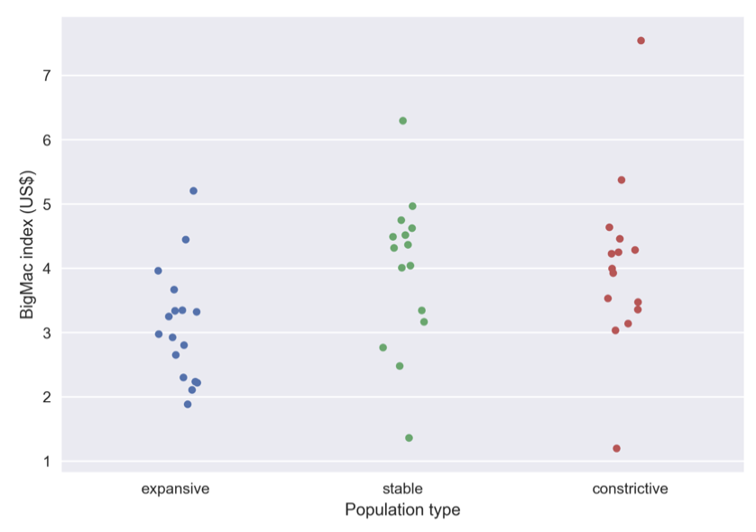
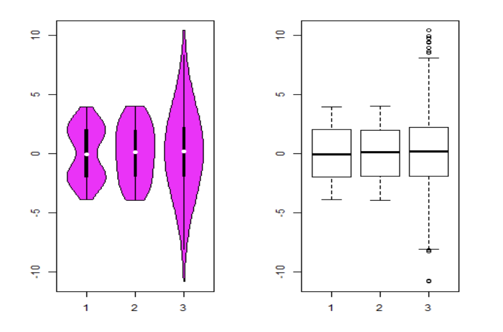

HW3: Part A - Reasoning
Answer these questions as you were asked during an interview: Don’t talk too less, and don’t talk too much!
Question 1
What do you mean by a normal distribution of data? What happens when the data is not normally distributed? Explain with an example.
Normal data distribution implies that the mean, median, and mode of a data set are all the same value. A histogram of a normally distributed dataset resembles a “bell shape” (thus also commonly associated with the term “bell curve”) where the value counts peak at the value in the center of the range, and the rest symmetrically taper as you approach the min and max values.
When a set of data is not normally distributed, that means that most of the data is skewed toward values other than the center value.
Question 2
How is a quantile-quantile plot different from a quantile plot? Illustrate with an example.
A quantile plot displays the quantile information from the distribution of a single random variable (univariate distribution). So, specifically speaking, the x-axis would indicate what the f-values are the y-axis is the values that exist in the data for the random variable.
A quantile-quantile plot (aka q-q plot) plots the quantiles of one random variable against the quantiles of another.
Plots the quantiles of one univariate distribution against the corresponding quantiles of another.
Question 3
Identify the plots below and explain the questions that follow
Plot1

- What is the plot above? (Scatter, Strip, Swarm)
- What can you infer from the plot?
- How is it different from the other two plots below?
Because the points don’t line up in a single line for each category, this doesn’t appear to be a categorized scatter plot. Strip and swarm are pretty similar to my understanding, but because there is minimal overlap between the clustered points, I want to say this is a swarm plot.
From this plot, I think I can infer that the “BigMac Index” (which I have never heard of until this assignment and now know is a measurement of purchasing power between different countries) is similarly distributed for the three given population types. The ‘stable’ and ‘constrictive’ population types are the only two with some outlying extremes, and the ‘constrictive’ population type has the largest range of extremes. And all three population types seem to cluster within the 2-5 index range.
This type of plot differs from the two bottom plots by giving a visual representation of the exact values of each and every point. The information this type of plot gives compared to the bottom two is quite different. The visualization of each individual point gives you an accurate depiction of the exact values the points seem to cluster around; however, it also leaves the interpreter to visually guesstimate the statistical values like averages and quantiles. Whereas the information in the two plots below provides a more exact visualization of the statistics of the data (quantiles, etc.) but thus a general summary of the data points (not any idea of how many points there are, etc.).
Plot(s)2

- What are the above two plots?
- What can you infer?
- Explain which one of the above two plots is better than the other with the proper justification.
The two plots from left to right are violin plots and box plots, respectively.
I can infer that whatever parameter “3” is supposed to represent, it has the largest range of values compared to the other two. “3” is also the only one the box plot considered to have any outliers (but even if you didn’t consider those, the difference between the relative maximum and relative minimum is still the largest of the three). However, “3” also seems to have the most normalized distribution of values compared to the other two. All three ‘categories’ have similar, if not the exact same, first, second, and third quartile values. “1” and “2” have similar or same (absolute) maximum and minimum.
Well, I would be reluctant to say one is “better” than the other because I find the use of both of them side-to-side like this to be the most informative (like the “outlier” minimum in “3”). However, if I HAD to pick one plot, I would likely choose the violin plot because it gives the same information as the box plot PLUS a bit more information regarding the distribution shape across each range. Specifically speaking, we can see how “1” and “2” differ in the violin plot.